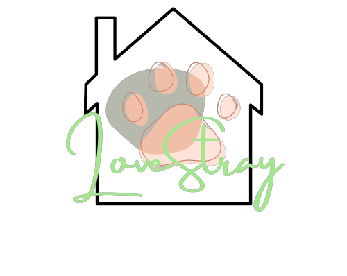

Soonie, Doongie, and Dori were all taken in by a concerned citizen who frequently saw them wandering the streets of their neighborhood.
They were never seen being away from one another. They slept, ate, and played together, along with the other pets in our sanctuary. Because they were all so difficult to separate, our sanctuary decided that they cannot be adopted as one or two.
Luckily, a little kid, together with his mother, decided to adopt them all together.

Tsuki was a stray found around the nearby school. She was given to us by the school's principal because a student's parents deemed her dangerous to their child. She couldn't let go of the principal, but it was for the best.
Tsuki was also one of our cuddliest cats. Fortunately, she was taken immediately after a kid came in with his mother, and Tsuki couldn't stop circling around his legs. We found out that the kid was a student from the school, and Tsuki was his favorite cat.

Chester was taken in as a stray by a concerned citizen. As soon as he left the citizen's arms, he ran around the sanctuary and played with the cats. He was known to be a fast runner, and was always seen chasing a ball, a mouse, or a balloon.
Chester was very good in mini pet games. He would always win against the other cats, but outside the battlefield, he was a goofy little cat. From the get-go, he allowed team members to touch his belly, which is unusual behavior for a cat.